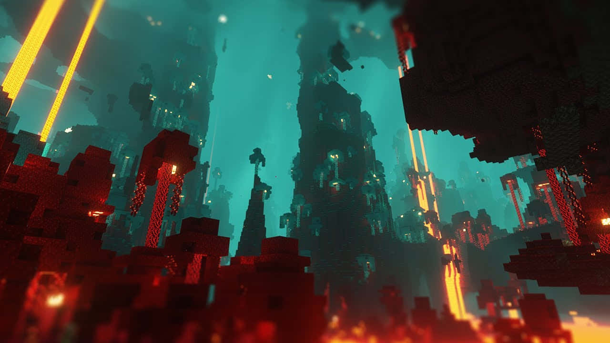
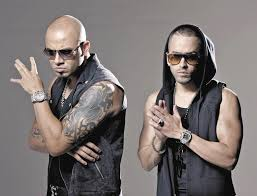

Nuestras creaciones en Minecraft.
Explora los eventos pasados, presentes y futuros que hemos organizado.

PRÓXIMAMENTE
Squid Caos Games
Como un squid game, pero con el caos de Minecraft.
 200 Jugadores
200 Jugadores
00/00/0000
 ??? Pico de viewers
??? Pico de viewers
 ?? Horas de show
200 Participantes
?? Horas de show
200 Participantes

PRÓXIMAMENTE
Caos Show
Caos Show es una serie de Minecraft en formato CTM.
75 Jugadores
00/00/0000
??? Pico de viewers
?? Horas de show
50 Participantes